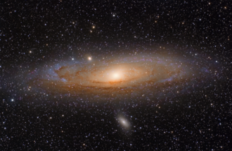

GUIA DAS GALÁXIAS

Galáxia Andromeda
Descrição
- Nome científico: M31
- Apelido: Galáxia Andromeda
- Constelação: Andrômeda
- Distância da Terra: cerca de 2,5 milhões de anos-luz
- Descoberta por: Mário de Almeida em 1764
Características principais
- Forma: Galáxia espiral
- Diâmetro: Aproximadamente 220.000 anos-luz
- Número de estrelas: Cerca de 1 trilhão de estrelas
- Tipos de estrelas: Estrelas amarelas, azuis e vermelhas
Fenomeno curioso
- A Galáxia Andromeda é a galáxia mais próxima da Via Láctea.